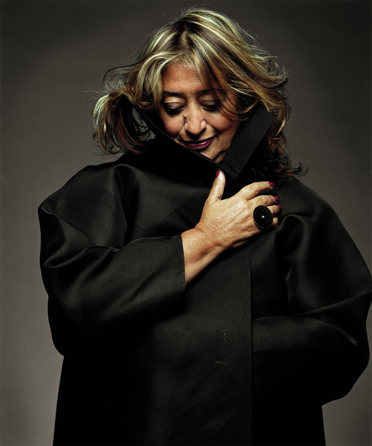

How did she change the world?
Dame Zaha Mohammad Hadid DBE RA (Arabic: زها حديد Zahā Ḥadīd; 31 October 1950 – 31 March 2016) was an Iraqi- British architect.
She was the first woman to receive the Pritzker Architecture Prize, in 2004. She received the UK's most prestigious architectural award, the Stirling Prize, in 2010 and 2011. In 2012, she was made a Dame by Elizabeth II for services to architecture, and in 2015 she became the first and only woman to be awarded the Royal Gold Medal from the Royal Institute of British Architects.
She was described by The Guardian of London as the "Queen of the curve", who "liberated architectural geometry, giving it a whole new expressive identity". Her major works include the aquatic centre for the London 2012 Olympics, Michigan State University's Broad Art Museum in the US, the MAXXI Museum in Rome, the Guangzhou Opera House in China, and the Beijing Daxing International Airport, also in China. Some of her awards have been presented posthumously, including the statuette for the 2017 Brit Awards. Several of her buildings were still under construction at the time of her death, including the Daxing airport and the Al Wakrah Stadium in Qatar, a venue for the 2022 FIFA World Cup.